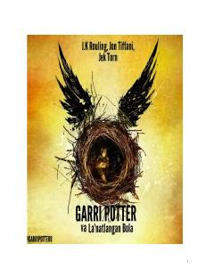

GPGarri Potter va uning o'g'li Albusning Xogvarsdagi yangi sarguzashtlari haqidagi pyesa.
Kitob mashhur Garri Potter olamidagi voqealarning davomi bo'lib, Garri va uning o'g'li Albusning Xogvarsdagi sarguzashtlari haqida hikoya qiladi. Pyesa shaklida yozilgan asarda qahramonlar o'tmish va kelajakdagi sinovlarga duch kelishadi. Asar o'quvchilarga tanish qahramonlarning yangi qirralarini ochib beradi.